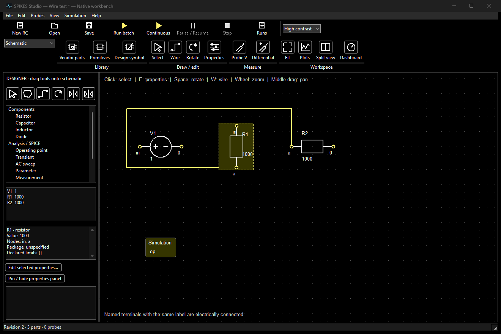
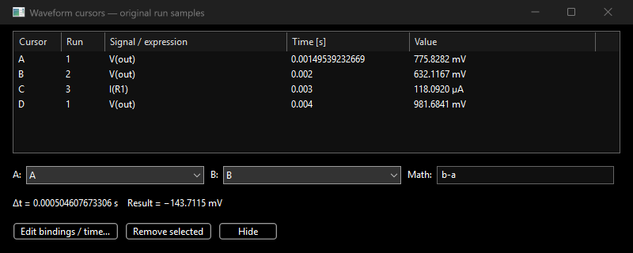
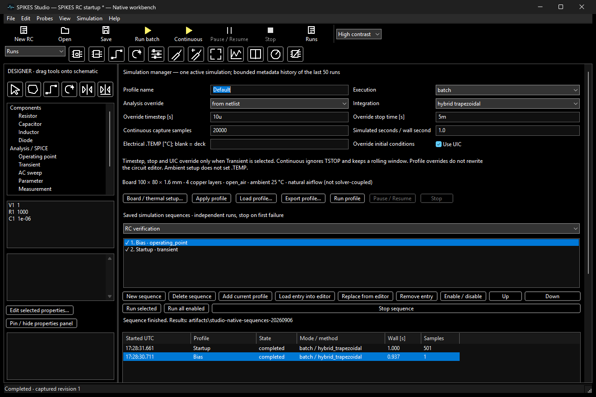

Multi-terminal models: Component catalog or Parts > Physics models opens original generic NMOS bulk-junction, NPN collector-substrate, substrate resistor, feedthrough capacitor and Kelvin-shunt templates. Enter SI coefficients, review terminal order and limitations, then export the SPICE subcircuit. Native charged transistors require backward Euler or BDF2. New PMOS/PNP/JFET/dual-gate symbols are geometry, not proof of executable native models. Foundry process/PDK, BiCMOS substrate transport and spatial TCAD are not provided by these templates.
SMPS analytical stability: Frequency > SMPS stability opens a floating parameter editor for ideal CCM buck, boost, inverting buck-boost and isolated flyback plants. Set the voltage-mode compensator, PWM and feedback gains; analyze loop/plant Bode, Nyquist and poles/zeros. The initial gain is deliberately untuned. Closed-loop poles classify the rational model, not hardware. DCM, ESR/DCR, current-mode and switching-cycle stability remain excluded. Save setup in project is undoable and does not change the schematic.
Reusable sampled IC blocks: In Controller, open Block library, select the generic PWM or PI controller and edit the labeled parameters. Load into editor does not execute code or modify the schematic. Review Pin properties, Apply/save setup, explicitly trust the code, then compile and run. Import/export .spkctl libraries for your own sampled C/C++ controllers. These are not manufacturer IC physics models; switching edges are quantized to the configured sample grid.
Standard passives: In Component catalog, search id:standard. for editable R/L/C and Kelvin-shunt templates. Select inch package codes from 01005 to 2512 or Custom, construction and tolerance; enter explicit parasitics and static temperature coefficients on their separate tab. Nearest-value tools support E3–E192. These are generic equations, not fabricated manufacturer SKUs or qualified accuracy claims.
Fuzzy discovery search: Parts, symbols, commands, nets, directives, battery records, model libraries, waveform selectors and HDL signals tolerate small spelling mistakes and letter swaps. Literal matches rank first. Short/numeric terms, quoted phrases, exclusions and structured catalog filters stay literal. Search never places a part or approves a model.
Derived analysis plots: After a transient run, open Analysis plots from the waveform toolbar or context menu. Use real signal/math expressions for XY, FFT amplitude, PSD, eye diagrams, histograms or cumulative integrals. These capture one retained run. FFT requires uniform timestamps; eyes require a supplied symbol period. The floating plot supports zoom, pan, grid and PNG/SVG/PDF export. Domain-circuits examples use explicitly selected ngspice and remain analytical examples, not hardware qualification.
Standard IC catalog: Manufacturer search includes sourced 54HC/74HC logic package pinouts and additional common analog/discrete parts. Review-only items are not executable circuit models. The functional HC Python API and its explicit generic ngspice recipe are not manufacturer-qualified. MCU binary execution and electrically timed SPI/SI co-simulation are not available yet.
Start with a small, verifiable circuit. These screenshots come from real desktop regression runs, not mockups. Features below describe the development build; older installers may differ.
First simulation | Draw and connect | Measure signals | Sequences | Limits and troubleshooting
W arms wiring. Click a terminal, optional corners, then the destination. Escape cancels. Drag a route to move it while keeping its endpoint pins connected. Rotate with Space or Ctrl+R; properties with E or Ctrl+E. Ctrl+Z undoes. Hover icons for labels.
Equal node labels already mean electrical connectivity. A line crossing alone does not join nets. Filled junction dots currently identify wires meeting at a shared terminal; arbitrary mid-wire branches remain pending.

Probe voltage with P, differential voltage with Shift+P, current with I and power with Shift+I. Use stacked panes for different units. Wheel zooms time; Shift-wheel or the left axis zooms amplitude. Right-click for fit, grid, legends and notes.
Click to place cursors and drag existing cursor lines. The dedicated cursor window retains each signal/run binding. Relative math uses a, b and dt. Measurements use original samples, not display decimation.

Open 05 parameter steps for three independent R values and run overlays. The screenshot above is from the earlier recorded RC qualification fixture, not necessarily the exact initial values in tutorial 05.
Ctrl+J opens the manager. Set a profile, create a sequence and Add current profile. Add an operating point and a transient entry; reorder or disable entries. Run All Enabled asks for an archive folder, runs independent cases in order and stops on failure. Save the schematic to retain the sequence.

Continuous simulation is best effort and has no automatic end, so it cannot be an auto-advancing sequence entry. Specialized AC/noise/Monte Carlo sequence integration remains pending.
The tutorial README covers controller pins, dashboards, recorded sensor inputs, recovery, library exchange and shortcuts. Topic guides in Help document detailed inputs and limitations. Full satellite/EV/solar qualification, battery aging, live microphone/speaker I/O, complete manufacturer libraries and hard-real-time HIL are not represented as finished features.
Double-click blank schematic space for a small icon-labeled search palette. Filter Components, Monitors, Text or SPICE; Up/Down selects, Tab completes, Enter accepts and Escape cancels. Components retain their value/model review before placement. Review-only parts never become runnable just by appearing in search.
Type a note and select Add as text, or enter a dot command and select Add as SPICE directive. Both options are explicit; directive errors leave the source unchanged. Partial directives suggest templates and known nets/component references suggest signal expressions. Meters and mini scopes require real signal bindings. Completion is contextual, not compiler-level IntelliSense.
Wire branches create explicit junctions, and junctions can start/end wires. Right-click a wire to add a split connection point; a crossing of another net remains unconnected until explicitly wired. Same-net T/4-way points show automatic dots, with hover/net-highlight halos. View > Toggle wire hops draws bridges over different-net crossings without changing circuit connectivity.
Ctrl+L places a source-bound Local, Global or Hierarchical label on a pin/wire. Global labels use real .global declarations and hierarchy labels bind declared ports. View > Schematic hierarchy navigates actual subcircuit instance views; Parent sheet / Flat schematic returns. Shared sheet definitions and new ports remain explicit Circuit text/subcircuit edits, not a complete KiCad-style graphical authoring interface.
Right-click to get actions for the actual component, wire, plot heading, dashboard item or catalog row. Menus group editing, transforms, placement, probes, view settings and measurements. Disabled actions remain visible. Code-editor Undo/Redo and clipboard actions affect the editor, not the schematic. Dashboard duplication, arrange, links and deletion are Design-mode actions; manufacturer-model menu availability does not establish model qualification.
In Design mode, add Block or Note alongside meters and scopes. Select an item, press Connect, then click a target; click empty space to cancel. Unlink removes attached connectors. Links follow moved/resized items and save with the project, but are visual relationships, not electrical nets.
DUT mapping records a future connector pin/GPIO and read/write direction. These are disconnected drafts: nothing reads or writes hardware. Source controls still operate only on simulated DC sources. Future SIL/PIL/HIL needs explicit target adapters, connect/arm consent, acknowledgements and tested disconnect behavior; a requested safe level is not an implemented hardware safety guarantee.
The Blocks/IDE workspace separates Diagnostics, Synthesis and Timing. Verilog uses actual Icarus/VVP and Yosys; VHDL uses actual GHDL analysis and bounded simulation. Search and select VCD signals, drag A/B cursors and export original-data timing measurements. Drag the source/result divider to allocate space. VHDL synthesis and technology-specific static timing closure are not implemented.
View offers Netlist beside schematic, Netlist above/below schematic and IDE beside schematic. Drag the divider; Home or Code only restores the ordinary workspace without copying or losing the draft. Select a known net, component or configured controller pin name in source to highlight its circuit connections. Controller inputs[n] and outputs[n] use the saved pin bindings. Syntax coloring is lexical; this is not compiler-level data-flow analysis.
Double-click a controller card for its floating code editor. Pins opens settings, Save setup commits changes and Return editor restores the same widget. Closing hides the window and keeps the draft. Compilation requires explicit trust and runs with your permissions; sampled controller execution currently supports C/C++, not HDL co-simulation.